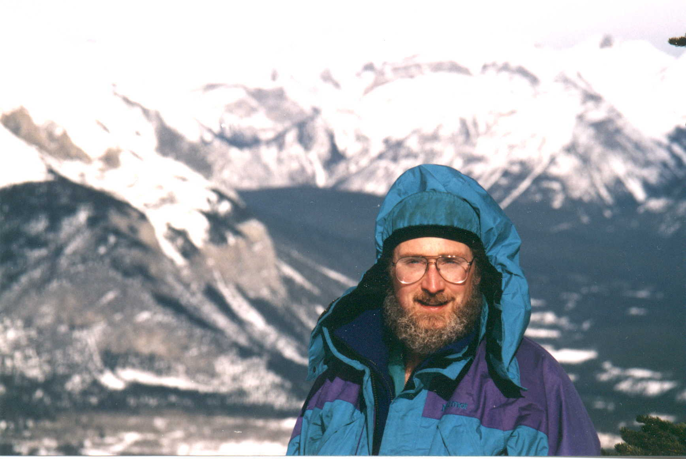

Dean in the Canadian RockiesDean O. Kuethe,
Ph.D.
New Mexico Resonance, 2301 Yale Blvd. SE, Suite C-1, Albuquerque,
NM 87106 dkuethe at NMR.org (505) 244-0017
Born 8 Sept. 1956
Current Research
Imaging obstructed ventilation in lungs with NMR with a method that will provide superior images of ventilation and perfusion and eliminate risk from ionizing radiation so that physicians may image lungs frequently.
Measuring pore sizes by measuring the NMR relaxation of inert fluorinated gases. The distribution of pore sizes in the 0.5 to 30 nanometer range is highly sought in porous catalysts, filters, and insulation.
Previous Key Accomplishments
Answered a 60 year old puzzle: why air flows in same direction through bird lungs during both inspiration and expiration in the absence of mechanical valves.
Developed theory and methods for measuring turbulent diffusivity and intensity with NMR imaging, an improvement over laser-Doppler anemometry for engineering fluid mechanics.
Employment History and Education
Scientist, New Mexico Resonance October 1999
through present. NMR imaging, respiration
physiology, fluid mechanics
Associate Scientist, Lovelace Respiratory Research Institute (f.k.a., The Lovelace Institutes, f.k.a. Lovelace Medical Foundation), April 1994 through September 1999. NMR imaging, respiration physiology, fluid mechanics
Scientist and Manager, Massachusetts Institute of Technology, Nuclear
Magnetic Resonance Imaging Facility, Francis Bitter National Magnet Laboratory, December 1989 to November 1993.
Developed theory and methods for measuring anisotropic turbulent diffusivity, turbulent
intensity, and correlation times with NMR imaging
Senior Scientist, Cambridge Scientific, November 1989. Developed mathematical model of drug capsules that burst at predetermined times by dialysis.
Research Associate, Duke University, Department of Radiology, January
1987 through July 1989.
Developed theory and methods for measuring turbulent diffusivity.
Determined safety of non-ferromagnetic retinal tacks in NMR imaging.
Ph.D. 1986 Duke
University, Department of Zoology
Major Professor: Knut Schmidt-Nielsen
Dissertation: Fluid Mechanical Valving of Air Flow in Bird Lungs
Answered a 60 year old puzzle of why air flows in same direction through lung during both
inspiration and expiration in the absence of mechanical valves.
Research Assistant, Johns Hopkins University Medical School,
Department of Neurology, September 1978 through August 1980.
Discovered neurological damage caused by radiosensitizing drug misonidazole in rats that
resulted in F.D.A. ban of the drug.
Research Assistant, State University of New York College of Environmental
Science and Forestry at Syracuse, Dept.
of Zoology, March through June 1978.
Studied nesting habits and breeding success of ravens in the Adirondack Mountains.
B.S. 1977 magna cum
laude State University of New York College of Environmental
Science and Forestry at Syracuse University
Majors: Wildlife Ecology and Comparative Physiology
Skills and
Expertise
Novel
approaches to problem solving that include bridging disciplines such as biology,
mathematics,
physics, medicine, and engineering.
Design and manufacture of apparatuses that work.
Excellent writing, lectures, and presentations; reading knowledge of German; 28 years computer programming.
Publications
Kuethe, D. O., A. Caprihan, H. M. Gach, I. J. Lowe, and E. Fukushima. 2000 Imaging obstructed ventilation with NMR using inert fluorinated gases. J. of Applied Physiology 88:2279-2286.
Loeppky, J. A., D. O. Kuethe, S. A. Altobelli, P. Scotto, and J. Piiper. 1999 Effects of gas density on experimentally obstructed ventilation during acute hypoxia. Respiration Physiology 117:151-160.
Kuethe, D. O., A. Caprihan, I. J. Lowe, D. P. Madio, and H. M. Gach. 1999. Transforming NMR data despite missing points. J. of Magnetic Resonance 139(1):18-25.
Gach, H. M., I. J. Lowe, D. P. Madio, A. Caprihan, S. A. Altobelli, D. O. Kuethe, and E. Fukushima. 1998. A programmable pre-emphasis system. Magnetic Resonance in Medicine 40(3):427-431.
Kuethe, D. O., A. Caprihan, E. Fukushima, and R. A. Waggoner. 1998. Imaging lungs using inert fluorinated gases. Magnetic Resonance in Medicine 39(1):85-88.
Kuethe, D. O., and J.-H. Gao 1995. NMR signal loss from turbulence: models of time dependence compared with data. Physical Review E 51(4):3252-3262.
Kuethe, D. O. D. C. Augenstein, J. D. Gresser, and D. L. Wise. 1992. Design of capsules that burst at predetermined times by dialysis. J. of Controlled Release. 18:159-164.
Kuethe, D. O., K. W. Small, & R. A. Blinder. 1991. Non-ferromagnetic retinal tacks are a tolerable risk in magnetic resonance imaging. Investigative Radiology. 26(1):1-7.
Kuethe, D. O. 1991. Confusion about pressure. The Physics Teacher. 29(1):20-22.
Kuethe, D. O. 1989. Measuring distributions of diffusivity in turbulent fluids with magnetic resonance imaging. Physical Review A. 40(8):4542-4551.
Kuethe, D. O. & R. J. Herfkens. 1989. Fluid shear and spin echo images. Magnetic Resonance in Medicine. 10(1):57-70.
Evans, A. J., R. A. Blinder, R. J. Herfkens, C. E. Spritzer, D. O. Kuethe, E. K. Fram, & L. W. Hedlund. 1988. Effects of turbulence on signal intensity in gradient echo images. Investigative Radiology. 23(7):512-518.
Kuethe, D. O. 1988. Fluid mechanical valving of air flow in bird lungs. Journal of Experimental Biology. 136:1-12.
Kuethe, D. O. 1986. Fluid mechanical valving of air flow in bird lungs. Ph.D. dissertation, Duke University. 72pp. University Microfilms International, Ann Arbor, MI. order # DA8629322.
Griffin, J. W., D. L. Price, D. O. Kuethe, & A. L. Goldberg. 1978. Neurotoxicity of misonidazole in rats I: neuropathology. Neurotoxicology. 1:299-312.
Abstracts of presentations, newsletters, etc.:
Kuethe, D. O. Respiratory imaging using CF4, SF6, and related gases. Environmental Molecular Sciences Laboratory Symposia 2000, Richland, Washington, June 2000.
Kuethe, D. O., A. Caprihan, H. M. Gach, I. J. Lowe, and E.
Fukushima. Imaging low
ventilation-to-perfusion ratios with NMR using inert fluorinated gases. Experimental Biology 2000 meeting, San Diego, April
2000.
Kuethe, D. O., A. Caprihan, H. M. Gach, I. J. Lowe, J. A.
Loeppky, and E. Fukushima. Imaging SF6 in lungs as an index to gas
exchange: something useful? 5th International
Conference on Magnetic Resonance Microscopy, Heidelberg, Germany, Sept. 1999.
Kuethe, D. O., A. Caprihan, H. M. Gach, I. J. Lowe, J. A.
Loeppky, N. C. Staub, and E. Fukushima. Imaging
obstructed ventilation with inert fluorinated gases. International
Society of Magnetic Resonance in Medicine meeting, Philadelphia, May 1999.
Kuethe, D. O., A. Caprihan, H. M. Gach, I. J. Lowe, J. A.
Loeppky, N. C. Staub, and E. Fukushima. Imaging
ventilation-to-perfusion ratios. Hypoxia Symposium,
Jasper Alberta, Feb. 1999.
Kuethe, D. O., A. Caprihan, E. Fukushima, H. M. Gach, I.
J. Lowe, and T. Pietraß. Imaging
almost nothing in lungs and etc. New Mexico
Regional NMR, Albuquerque, Oct. 1998.
Kuethe, D. O., P. Morris. Exposing the H in an H-free coil.. The NMR Newsletter, No. 480:33-34, 1998.
Kuethe, D. O., A. Caprihan, E. Fukushima, H. M. Gach, and I. J. Lowe. Is imaging lungs using inert fluorinated gases useful to medicine?. 39th Experimental Nuclear Magnetic Resonance Conference, Pacific Grove, CA, March 1998.
Altobelli, S. A., A. Caprihan, E. Fukushima, D. O. Kuethe, J. D. Seymour. NMR studies of fluid structure, Flow, and diffusion. American Physical Society Four Corners Meeting, March 98.
Kuethe, D. O., A. Caprihan, E. Fukushima, H. M. Gach, and I. J. Lowe. Imaging obstructed ventilation in lungs using inert fluorinated gases. 4th International Conference on Magnetic Resonance Microscopy and Macroscopy, Albuquerque, NM, Sept. 1997.
Kuethe, D. O., A. Caprihan, E. Fukushima, R. A. Waggoner, H. M. Gach, and I. J. Lowe. Imaging lungs using inert fluorinated gases. International Society of Magnetic Resonance in Medicine meeting, Vancouver, BC, April, 1997.
Kuethe, D. O., C. Gasparovic, A. Bee, and T. Kellywood. Will inert fluorocarbon gases tell us intracellular oxygen concentrations? Hypoxia Symposium, Lake Louise, Alberta, Feb. 1997.
Loeppky, J. A., D. O. Kuethe, S. A. Altobelli, R. C. Roach, M. Icenogle, and P. Scotto. Is the increase in ventilation with hypoxia affected by gas density? Hypoxia Symposium, Lake Louise, Alberta, Feb. 1997.
Kuethe, D. O., A. Caprihan, E. Fukushima, H. M. Gach, and I. J. Lowe. Fluorinated gases in lungs are more like solids than liquids. The NMR Newsletter, No. 459:31-32, Dec. 1996
Kuethe, D. O., A. Caprihan, and R. A. Waggoner. Imaging inert fluorinated gases in lungs. New Mexico Regional NMR, Soccorro, March 1996.
Kuethe, D. O., A. Caprihan, and R. A. Waggoner Imaging SF6 and C2F6 in lungs. 37th Experimental Nuclear Magnetic Resonance Conference, Pacific Grove, CA, March 1996.
Kuethe, D. O. NMR signal loss from turbulence: test of theories. 36th Experimental Nuclear Magnetic Resonance Conference, Boston, March 1995
Wang, L. Z., S. A. Altobelli, D. O. Kuethe, and E.
Fukushima. Use of oscillating
gradients to probe diffusion spectra. 36th
Experimental Nuclear Magnetic Resonance Conference, Boston, March 1995
Kuethe, D. O., J. A. Loeppky, and G. Malvin. Nucleate vs.
enucleate red blood cells: rate of acid accumulation in whole blood. Hypoxia Symposium, Lake Louise, Alberta, Feb. 1995.
Zientara, G. P., L. P. Panych, and D. O. Kuethe. 1994 Dynamically
adaptive MRI pulse sequence method using the SVD. J.
Mag. Res. Imag. 4(P):38.
Gao, J.-H., D. O. Kuethe. 1994 Measuring correlation time of turbulence using NMR technique. J. Mag. Res. Imag. 4(P):121.
Gao, J.-H., D. O. Kuethe, and L. J. Neuringer. Mapping turbulent intensity by NMR imaging. Society of Magnetic Resonance in Medicine meeting, New York, August 1993.
Stabb, J. S., J. J. Knapik, S. A. Smith, D. O. Kuethe, and L. J. Neuringer. The relationship between muscle strength and muscle cross sectional area determined by magnetic resonance imaging. American College Sports Medicine meeting, 1993.
Gao, J.-H., D. O. Kuethe, and L. J. Neuringer. 1993 Phase contrast method in turbulent flow velocity measurement. J. Mag. Res. Imag. 3(P):125.
Gao, J.-H., D. O. Kuethe, and L. J. Neuringer. 1992 Time course of NMR signal loss due to turbulent flow. J. Mag. Res. Imag. 2(P):142.
Gao, J.-H., D. O. Kuethe, and L. J. Neuringer. 1992 Turbulent
flow measurements by nuclear magnetic resonance. Bull.
Amer. Phys. Soc. 37(9):1870.
Kuethe, D. O. & L. J. Neuringer. Measuring anisotropic turbulent diffusion. Society of Magnetic Resonance in Medicine meeting, San Francisco, August 1991.
Kuethe, D. O. Measuring distributions of eddy diffusivity with magnetic resonance imaging. Seventh Symposium on Turbulent Shear Flows, Stanford CA, August 1989, 6 page paper.
Kuethe, D. O. Measurements of turbulent diffusivity with magnetic resonance imaging may be useful for characterizing cardiovascular disease. Canadian Assoc. Physicists, Div. Med. & Biol. Phys. meeting, London, ON, June 1989.
Kuethe, D. O., K. W. Small, & R. A. Blinder. Dynamic similarity applied to the Maxwell equations to determine if patients with metallic tacks in their eyes are safe in large magnets. C. A. P., Div. Med. & Biol. Phys. London, ON, June 1989.
Kuethe, D. O. and O. B. Boyko. "Ghosts" of blood vessels mimic breaches
in the blood-brain barrier in gadolinium enhanced MR images. Association of University Radiologists meeting,
Seattle, May 1989.
Kuethe, D. O., K. W. Small and R. A. Blinder. Are large magnetic fields safe for patients with metallic retinal tacks? A. U. R. meeting, Seattle, May 1989.
Kuethe, D. O. 1989. Measuring distributions of diffusivity in turbulent fluids with magnetic resonance imaging. Bull. Amer. Phys. Soc. 34(3):739.
Kuethe, D. O. & R. J. Herfkens. Fluid shear: quantifying signal changes caused by
known shear rates. Society of Magnetic Resonance in
Medicine meeting, San Francisco, Aug. 1988.
Kuethe, D. O. & R. J. Herfkens. Fluid shear and magnetic resonance imaging. Association of University Radiologists meeting, New Orleans, April 1988.
Kuethe, D. O. 1985. Fluid mechanical valving of air flow in bird lungs. American Zoologist. 25:117A.
Awards
Best Student Paper Award, 1985 meeting of American Society of Zoologists
Cocos Fellow, Duke University, Fall 1984 through Summer 1985
NIH Trainee, Fall 1981 through Summer 1984
Invited Lectures
Respiratory imaging using CF4, SF6, and related gases. Environmental Molecular Sciences Laboratory Symposia 2000, Richland, Washington, June 2000.
Imaging SF6 in lungs as an index to gas exchange: something useful? 5th International Conference on Magnetic Resonance Microscopy, Heidelberg, Germany Sept. 1999.
Making pictures of almost nothing in lungs with a big magnet and radio waves. Utah NMR Workshop, University of Utah, Physics Department, Aug. 1998.
Imaging obstructed ventilation in lungs using inert fluorinated gases. 4th International Conference on Magnetic Resonance Microscopy and Macroscopy, Albuquerque, NM, Sept. 1997.
Imaging inert fluorinated gases in lungs with NMR. Univ. of Pittsburgh/Carnegie Mellon Univ., Pittsburgh, Oct. 1996.
Imaging inert fluorinated gases in lungs with NMR. University of Washington, Seattle, Aug. 1996
Brain capillary density at high altitude in people and rats. New Mexico State University, Los Cruces, Dec. 1995.
NMR signal loss from turbulence. Univ. of Pittsburgh/Carnegie Mellon Univ., Pittsburgh, Oct. 1995.
Moving the NMR imaging frame. MIT, Symposium, Future Directions in Biomedical Magnetic Resonance, in memory of Leo Neuringer, Oct. 1993.
Fluid mechanical valving of air flow in bird lungs. Museum of Comparative Zoology, Harvard University, Cambridge, MA, Feb. 1990.
Review Articles
for Physical Review Letters Physical Review E American Journal of Physiology |
Have reviewed articles for IEEE TBE Academic Radiology Investigative Radiology Solar Energy |
Students and
Post-Docs
Avery Evans, Medical Student on research rotation, Duke University Medical School 1987-1989
Jai-Hong Gao, Post-Doc, Massachusetts Institute of Technology 1992-1993
Volker C. Behr, Masters, Physics, University of New Mexico, 1999.
Summer
Interns at LRRI:
1995
Jake Ingram, San Juan Community College, UNM
Josef Mikeska, Santa Fe Community College, UNM
Samad Hashimi, Albuquerque Public Schools
1996
Angelita Bee, Diné College, Shiprock
Timothy Kellywood, Diné College, Shiprock
1998
Priscilla Tsosie, Diné College, Tsalie
Jorge Silva-Banuelos, Albuquerque Academy
1999
Stephanie Begay, Diné College, Shiprock